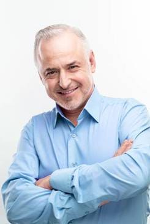
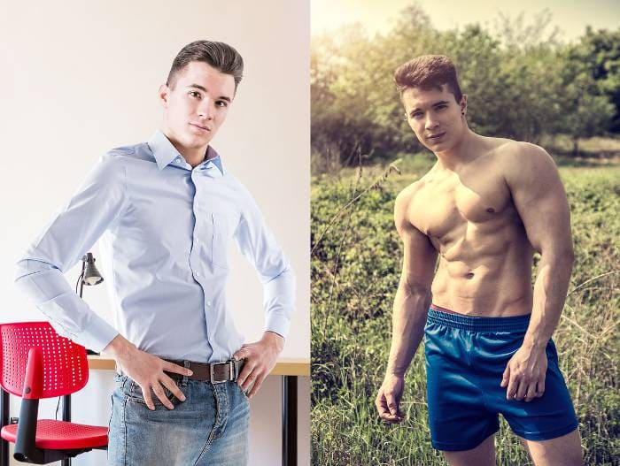

En 1 mes ganarás 10 kg de músculo tan duro como una roca sin tener que hacer ejercicio ni dieta, un efecto confirmado por pruebas médicas independientes.
Daniel
Soy el Prof. Carlos Ortiz Torres y soy científico, especialista en ingeniería genética. En esta página, quiero presentarte el mayor logro de mi vida, por el que acabo de ser nominado para el equivalente asiático del Premio Nobel: el Premio Confucio. He desarrollado una fórmula para estimular la síntesis de proteínas, contribuyendo al máximo aumento de masa muscular. Gracias a mi método, todo hombre puede ganar de forma automática y permanente 10 kg de masa muscular pura en 1 mes.
Entonces, si quieres:
- ganar 10 kg de masa muscular pura en 1 mes de forma automática, sin gimnasio ni dietas;
- Esculpe músculos duros como una roca por todo el cuerpo, sin levantar pesas, sin entrenar y sin las lesiones y traumas resultantes;
- haz la "tortuga" en el abdomen – incluso si en este momento solo ves rollos de grasa;
- Convierte la grasa en músculos fuertes y firmes, incluso si está luchando contra el sobrepeso o la obesidad
- ganar 4 veces más energía y 5 veces más fuerza muscular y así sentirse como un verdadero hombre...
... y si quieres lograr todo esto sin los entrenamientos excesivos, los suplementos peligrosos, las dietas agotadoras y en consecuencia ahorrar decenas de miles de euros - lee lo que tengo que contarte.
No importa la edad que tengas o el tiempo que lleves intentando esculpir tu figura musculosa. Incluso si has escuchado que no hay nada que ver con tu tipo de cuerpo porque simplemente eres delgado o con sobrepeso y estás condenado al fracaso... Debes saber que en un mes podrás disfrutar de 10 kg de músculo duro como una roca sin ir al gimnasio.!
Aquí te explico por qué mi fórmula es una excelente alternativa a las dietas, los suplementos y los ejercicios insoportables en el gimnasio:
- obtendrás 10 kg de músculo en 1 mes, logrando un mejor efecto que haciendo 3 años de entrenamiento intenso;
- automáticamente obtendrás músculos robustos, sin esfuerzo y sin sacrificio, incluso cuando estés acostado frente al televisor, leyendo un periódico o durmiendo;
- no es necesario seguir ninguna dieta, - porque el crecimiento intensivo del tejido muscular se produce a nivel del ADN;
- evitarás las consecuencias de lesiones o traumatismos en los músculos, las articulaciones y la columna, que son el resultado final del entrenamiento;
- protegerás tu salud, en lugar de envenenarse con nutrientes y estimulantes peligrosos;
- ahorrarás tiempo, en lugar de pasar la mitad de tu vida en el gimnasio;
- Ahorrarás dinero, en lugar de gastarlo en gimnasios y nutricionistas.
He desarrollado un método intragénico que genera automáticamente 10 kg de masa muscular pura en 1 mes.
Gracias a esto, no tendrás que hacer ejercicio, seguir dietas o envenenarte con suplementos y potenciadores sospechosos. Olvidarás todos los problemas y humillaciones que te han preocupado por tu figura no deportiva, demasiado delgada o gorda. Comenzará a desarrollar masa muscular limpia haciendo sus actividades diarias: ir al trabajo, tomar una taza de té, contestar el teléfono. Cada movimiento activará los procesos regenerativos de las fibras musculares y estimulará la síntesis de proteínas, que construirá de forma automática y permanente masa muscular pura.
Y eso es todo porque he desarrollado una fórmula intragénica que genera automáticamente 10 kg de masa muscular pura en 1 mes. ¿Como lo hice?
Quería ayudar a mi hermano a conseguir una figura masculina de la que estuviera orgulloso.
Las últimas investigaciones del Instituto de Deportes muestran que el 62% de los hombres en España tienen un problema de baja autoestima debido a la falta de figura masculina, mientras que 4 de cada 10 de ellos son percibidos como no masculinos. Lamentablemente este problema también afectó a mi hermano pequeño: Juan.
Mi hermano siempre ha sido frágil, tenía hombros estrechos, pero nadie en la familia pensó que se sentía mal en su cuerpo. Todo cambió cuando se fue a su primer trabajo y se enamoró de una chica que había conocido allí.
Empezó a tener problemas para dormir, le sudaban las manos... Pensó que estaba enfermo, pero estaba "simplemente" enamorado. Fue un amor platónico. Mi hermano era bastante tímido e inseguro, tenía miedo de ser rechazado.
Después de unos meses, en una fiesta de la empresa, finalmente encontró el coraje para acercarse a la niña e invitarla al cine. Él esperaba un "no", pero ella aceptó. Mi hermano estaba en el séptimo cielo. Durante los días siguientes no habló más que de la cita y la chica de sus sueños.
Planeó todo hasta el más mínimo detalle: el cine, la película romántica, el paseo y la cena. Se encontraron frente al cine. Cuando llegó la niña, hicieron cola en el mostrador. Hablaron, se rieron y ni siquiera escucharon a nadie decirles nada. De repente, mi hermano sintió que alguien le daba unas palmaditas en el hombro y le decía: "Señora, se le cayó la bufanda". Mi hermano se puso rojo. "Señora" - esa persona lo confundió con una mujer solo porque era delgado y tenía los hombros estrechos... La niña se sorprendió... Mi hermano, sin embargo, quiso comportarse con elegancia y se quedó hasta el final de la película. Apenas podía sentarse en esa silla, pero después de la película encontró una excusa y se escapó.
Después de ese incidente, Juan se encerró. No llamó a nadie de su familia, apagó su teléfono. Nadie sabía lo que le estaba pasando. Todos moríamos de preocupación.
Arruinó su salud y su salud mental
Juan se aisló completamente del mundo. A partir de ese momento, lo único que importaba era el gimnasio, los nuevos amigos y los diversos suplementos que le daban. Hacía más y más pesas, esforzando su cuerpo. Hizo todo lo posible para cambiar su genética. Quería fortalecer sus músculos, comenzando por su figura delgada y hombros estrechos. Los entrenamientos pesados en el gimnasio no lo ayudaron. Ningún músculo apareció en su frágil cuerpo. Finalmente, comenzó a comprar impulsores peligrosos, que se suponía que le daban el cuerpo de un culturista. Todavía no sabía que estaba arriesgando su vida. Los continuos entrenamientos pesados, la motivación poco saludable, el odio a su cuerpo y las píldoras peligrosas estaban arruinando su salud y su psique.
Lo peor es que fue de mal en peor. No volvió al trabajo, no podía soportar la vergüenza y la humillación frente a esa chica. Solo se dirigió a sus padres para pedirles dinero. Hizo muchas deudas con su familia y con la mayoría de sus amigos, solo para poder pagar el gimnasio, el entrenador personal, la ropa deportiva, los refuerzos y los suplementos que estaba tomando.
Odiaba su cuerpo hasta el punto de destruirlo y torturarlo. El gimnasio se había convertido en una especie de sala de tortura. Pensó que estaba haciendo algo bueno al desarrollar sus músculos, pero en realidad estaba desgastando sus articulaciones y su cuerpo en general. Un día, su cuerpo se negó a obedecer. Se desmayó y un gran peso que estaba levantando cayó sobre él. Terminó en la sala de emergencias. Casi pierdo a mi hermano...
¿Cómo inventé la "patente de explosión muscular"?
Tuve que ayudar a mi hermano a conseguir una figura masculina de la que se sintiera orgulloso: sin gimnasio, sin dietas y sin suplementos peligrosos. Quería que pudiera tener un cuerpo en el que se sintiera 100% masculino. Cuando fui al hospital y miré a Juan, se me ocurrió una idea: ¡después de todo soy un científico! Participé en el descubrimiento de muchas sustancias que combaten eficazmente diversas enfermedades, afectan tejidos y genes. ¿Por qué no desarrollar una fórmula de crecimiento muscular automática que sea eficaz y segura? Y luego comencé la búsqueda...
He estado haciendo una intensa investigación de laboratorio durante seis meses. Probé diferentes combinaciones de sustancias activas en mi hermano. Solo señalaré que todos eran 100% naturales y seguros para el cuerpo. El conocimiento científico y un poco de suerte llevaron rápidamente a este resultado: desarrollé una fórmula única que regenera las fibras musculares, estimula la síntesis de proteínas y la sometí inmediatamente a una investigación a gran escala. ¡Su eficacia del 98% ha sido confirmada por los mayores centros de investigación de Europa y EE. UU.! Durante las pruebas, mi fórmula intragénica ya ha ayudado a 7.000 hombres a ganar 10 kg de masa muscular pura.
Juan, después de solo 1 semana de usar esta fórmula, activó la síntesis de proteínas y comenzó a ganar masa muscular 8 veces más rápido que cuando se suicidó en el gimnasio y se envenenó con esos suplementos. Y esto fue solo el comienzo. ¡La semana siguiente sus frágiles músculos explotaron! ¡Hizo dos bíceps como un atleta de UFC! Día a día mejoraba, ya que con su figura parecía un culturista profesional. Los músculos de todo el cuerpo eran duros, sólidos y fuertes.
Después de solo 3 semanas, mi hermano, mirándose en el espejo, gritó y dijo: "¡Hermano mío, tú inventaste la patente para la explosión muscular! Para convertirme en una figura así, tendría que torturarme en el gimnasio por ¡6 años! ¡Eres un genio! "
Mi hermano ganó 10 kg de masa muscular y logró una figura masculina de la que ahora está orgulloso
Ganó un total de 10 kg de masa muscular pura en solo un mes. Lleno de energía, volvió a la vida, encontró trabajo y sobre todo... tuvo el coraje de hablar con la chica de la que aún estaba enamorado. ¿Y sabes qué? ¡Casi se desmaya cuando lo vio! ¡Ella esperaba ver a un chico flaco y en su lugar conoció a un hombre real con músculos que parece un culturista!
Permítanme explicarles brevemente por qué algunos hombres tienen músculos como los culturistas, mientras que otros son delgados o gordos. Este proceso es muy complicado, pero intentaré explicarlo en un lenguaje comprensible para una persona que no sea científica.
Sepa que una figura musculosa no se debe solo al entrenamiento diario. Seguro que conoces a alguien que entrena casi todos los días y que no parece un culturista. Esto se debe a que no todos conocen la síntesis de proteínas. Es un gen que todo hombre tiene, pero cuando no se activa bloquea el crecimiento muscular natural y automático.
Por eso mi desafío fue crear una fórmula que tuviera un efecto radical. Activar la síntesis de proteínas, luego activar el tejido muscular para un crecimiento automático, rápido, permanente y seguro. ¡Lo he hecho! He desarrollado mi propia fórmula intragénica. Lo llamé FortuMax gotas.
¿Por qué mi fórmula intragénica se llamó "la patente de la explosión muscular"?
TIENE MÁS DEL 98% DE EFECTIVIDAD EN LA CONSTRUCCIÓN DEL TEJIDO MUSCULAR

ANTES
DESPUÉS
Hasta ahora, todo esto puede parecer un milagro. Pero es un hecho que lo confirma el caso de mi hermano y otros 7.000 hombres que ya han ganado 10 kg de masa muscular en 1 mes. Además, la eficacia de la fórmula intragénica fue probada por el centro de investigación español en Barcelona. Es un descubrimiento mundial que se ha ganado el reconocimiento y la admiración de los principales especialistas en el mundo de la genética, la dietética y los culturistas profesionales.
ES 100% SEGURO Y FÁCIL DE USAR
Los ingredientes naturales funcionan de maravilla: ¡la ciencia solo necesita desarrollar una composición perfecta! Este es el lema que me guió en la creación de la fórmula intragénica. La fórmula contiene solo sustancias naturales, seguras y súper efectivas. Las gotas FortuMax son un complemento alimenticio que contiene un complejo de principios activos especialmente seleccionados, que apoyan los procesos de regeneración de las fibras musculares y estimulan la síntesis de proteínas, contribuyendo al máximo aumento de la masa muscular. Los extractos de plantas, vitaminas y microelementos aceleran activamente los procesos metabólicos, lo que se traduce en una mayor eficiencia de todo el cuerpo y una mejor efectividad durante el entrenamiento. La preparación se basa exclusivamente en ingredientes de origen natural, fácilmente asimilables y seguros de usar. La fórmula única acelera el desarrollo de la masa muscular, regula el manejo hormonal y apoya activamente el rendimiento físico. Además, ¡obtendrás 10 kg adicionales de músculos duros y fuertes! Para obtener los mejores resultados, se recomienda tomar 60 gotas al día.
¡Todos los que estén acostumbrados a tu figura frágil o gorda se sorprenderán al ver 10 kg de músculos duros como una roca en tu cuerpo!

10 KG DE CRECIMIENTO MUSCULAR EN 1 MES
70% MÁS POTENCIA

METABOLISMO A MÁXIMA VELOCIDAD

FÁCIL DE USAR
RECONSTRUCCIÓN AUTOMÁTICA DE MÚSCULOS SIN DIETAS NI EJERCICIO
AHORRO DE DINERO
Puedes seguir cansándote en el gimnasio. También puedes seguir envenenándote con peligrosos suplementos y potenciadores... ¿Pero por qué, cuando te garantizo una forma rápida, sencilla y económica de ganar 10 kg de masa muscular pura? Solo hace falta 1 mes para unirse a los 7.000 usuarios satisfechos de las gotas FortuMax que ya están disfrutando de su figura de culturista.
¡No arriesgas nada!
Con las gotas FortuMax obtendrás 10 kg de músculos en 1 mes. Además, ¡no arriesgarás nada! Confirmando su éxito, mi fórmula ha recibido una prestigiosa garantía de triple satisfacción: originalidad, calidad y satisfacción.
Garantía de Satisfacción Triple
1. Originalidad garantizada en la fórmula intragénica, las gotas FortuMax se han insertado con una fórmula basada en sustancias fuertes que activan el crecimiento del tejido muscular. Su eficacia está confirmada por pruebas clínicas. Es la única fórmula tan innovadora y eficaz. Por este motivo, puede estar seguro de que recibirá el producto original, disponible únicamente a través de este sitio web.
2. Calidad garantizada: gracias al avanzado proceso de fabricación de la fórmula intragénica, las gotas FortuMax cumplen con los más altos estándares de calidad. Por el bien de su salud y bienestar, la concentración de sustancias activas se ha seleccionado de manera que la fórmula sea completamente segura. Todo ello para que sus efectos cumplan tus expectativas al 100%.
3. Satisfacción garantizada: numerosas pruebas de laboratorio y de consumidores confirman la máxima eficacia de las gotas FortuMax. A partir de estos resultados, la fórmula ha ganado el reconocimiento de especialistas de todo el mundo, que la recomiendan a sus clientes. Están seguros de que en 1 mes ganarás 10 kg de masa muscular pura (independientemente del tipo de silueta).
Obtén 10 kg de músculo en 1 mes, de forma rápida, sencilla y económica
Obtén las gotas FortuMax con un 50% de descuento